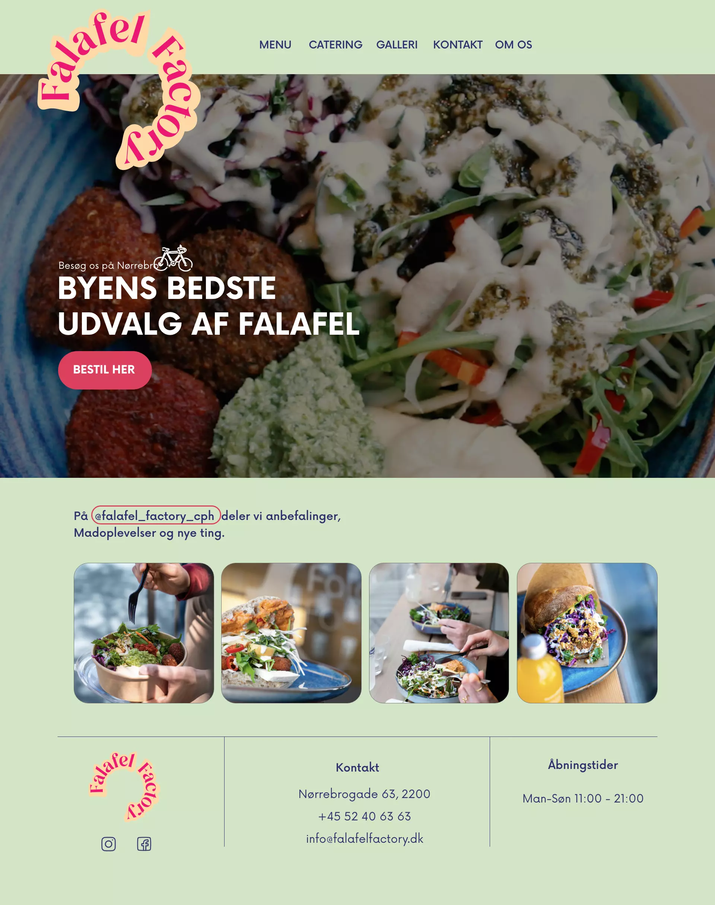
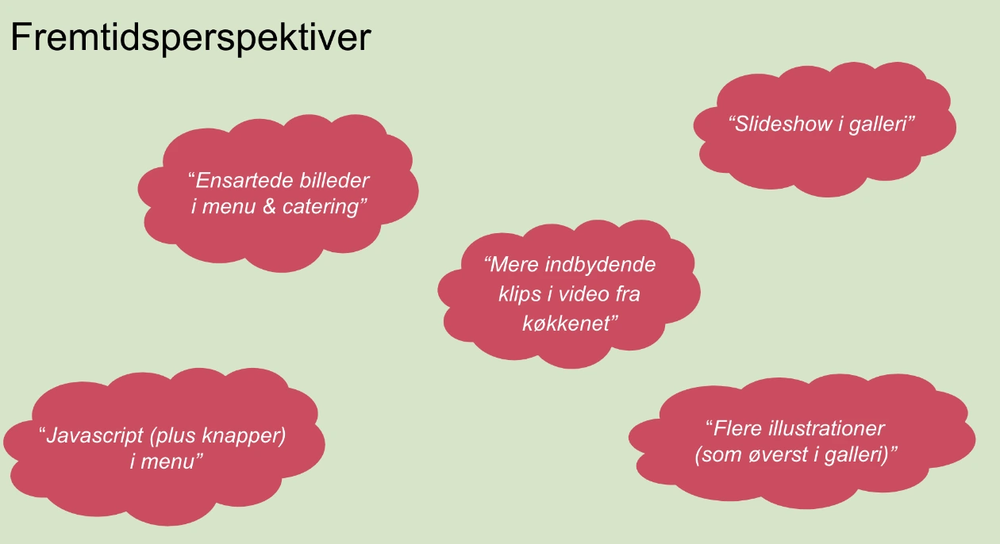

+ 05 content
01 Passionsvideo
02 Redesign

Passionsvideo
I tema 5 var første del af en interviewvideo ud fra en persons passion. Denne video blev udarbejdet ud fra premiere pro, hvor vi lærte om forskellige klippeteknikker (såsom B-rolls), colorgrading, framing og lyssætning. Vi skud filmen på et spejlreflekskamera, hvor vi lærte omkring indstilling af lukketid og blænde, samt brug af mikrofon til at opnå det bedste mulige lyd.

Redesign
Den anden del var at redesigne en virksomhedshjemmeside, hvor valgte vi Falafel Factory. Vi valgte Falafel Factory, da de har en stærk instagramprofil med blikfangende billeder. Deres nuværende hjemmeside var derimod teksttung og svær at navigere rundt. Derfor var vores mål at skabe en hjemmeside en billedlig hjemmeside, som var nem at navigere rundt, samt opfordrede til mersalg.
Designanalyse

Test af eksisterende site
Interview
Vi fandt 3 forskellige interviewpersoner til både at teste den nuværende site og senere henne i forløbet teste vores redesign. I begge interviewsituationer blev de bedt om at lave en 5 sekunder test og dernæst blev de bedt om at lave en tænk højt. Ydermere, stillede vi spørgsmål til det rent grafiske elementer og om gav dem små navigationsopgaver. Kort sagt, synes de ikke, at det var visuelt pænt, manglede billeder af produkter., slet ikke imødekommende, mega grimt, samt ikke nem at navigere rundt i.
Bert Test
Ydermere, testede vi den eksisterende site ved at bruge BERT. BERT bruges til at analysere og forstå brugerfeedback, spørgsmål eller kommentarer relateret til et design. Ved at bruge BERT kan man opnå en dybere forståelse af brugernes meninger, holdninger og intentioner. Man rangerer et udsagn fra f.eks. udefineret - sofistikeret på en skala fra 1-10 og hermed skal vurdere, hvad de mener ift. givet web design. Vores test vidste en primært en vurdering under 5, hvilket indikerer sitet trænger til forbedring ift. design og navigation rundt på siden
lighthouse
En “Lighthouse-test” refererer normalt til en form for automatisk webudviklingsværktøj, der er udviklet af Google. Det er en del af Google Lighthouse-projektet, der giver mulighed for at teste og evaluere forskellige aspekter af en websides ydeevne, tilgængelighed, bedste praksis og SEO (søgemaskineoptimering). Lighthouse-testen fungerer ved at simulere brugeradfærd og analysere webstedet ud fra forskellige kriterier. Den giver en detaljeret rapport med anbefalinger og forslag til forbedringer. Som nedenstående uddrag fra lighthouse viser over det nuværende site, scorer dårligt i ydeevne, tilgængelighed og SEO. Derfor er plads til forbedringer, hvilket vi satsede på at gøre i vores redesign

Moodboard
På baggrund af de forskellige test, var målet med moodboardet at ramme noget mere moderne, elegant, friskt, ungt design, samt en nem navigation på websitet. Vi blev inspireret af tekster, som var inkorporerer i billeder, samt effekten af at tegne ovenpå madvarer, så manden kom mere i fokus. Dertil var vi også inspireret af mere pastelfarver.
Styletile
LinkVi valgte at beholde en grøn baggrundsfarve, men gjorde den mere frisk og indbydende i forhold til det nuværende grønne på det eksisterende site. Det gik vi med farver der alle stammer fra råvarer fra deres falafel bowls og pita indeholder. Dertil redesignet vi logoet til bedre at kunne blive printet på emballage som gentagelser og et mere up-to-date design. Dertil er den røde farve en komplimenter farve til grønne. Knapper er også lavet i den røde farve for at skabe blikfang og mersalg. Dertil gav billederne blødekanter ligesom falaflen.
Prototype

Video
Videoen er lavet om til slowmotion og close-up af madvarer og personale . Dertil er der etablish shot ved starten af videoen for at sætte settingen, hvor vi befinder sig. Der er fokus på brødrene , der ejer butikken. De er charmerende og flirterne og hermed til at skabe mersalg. Videoen er colorgradet med et mørkt slør for at hjælpe til at skabe mere kontrast til overskrifterne ovenpå videoen.
Test af rededesign
Interview
Interviewpersoner var generelt glade for de nye design og synes, at det var blvet meget nemmere at navigere rundt på sitet. De havde kun nogle få designmæssige rettelser, som vi rettede til.
berttest
I BERT fik den redesignet hjemmesidde også svar over 5, hvilket indikerer vi har opnået et bedre design og brugeroplevelse.
lighthouse
I lighthouse testen havde vi også forbedret ydeevne, tilgængelighed, bedste praksis og SEO (søgemaskineoptimering), som kan nedenstående klip fra lighthouserapporten
Fremtidsperspektiv
